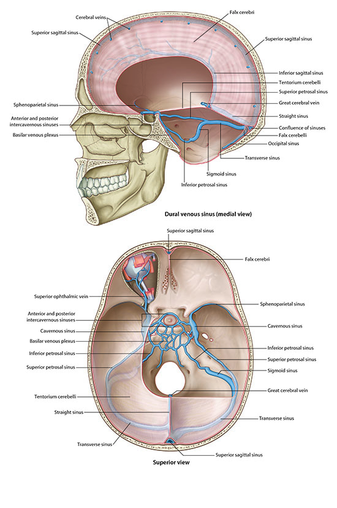

Neurology Lab 1 - Module 1 - Blood Supply to the Brain: Page 4 of 5
×

Next, we will discuss the venous drainage of the brain.
The extension of the dura into and around the brain hemisperes form the falx cerebri and the tentorium cerebelli.
|  |
| Tap on image to enlarge |
Between what layers of the meninges are the above sinuses located? |
|
|
The venous drainage flows through the two cranial components of the dura mater. (The outer periosteal layer and the inner menigeal layer.) |
|